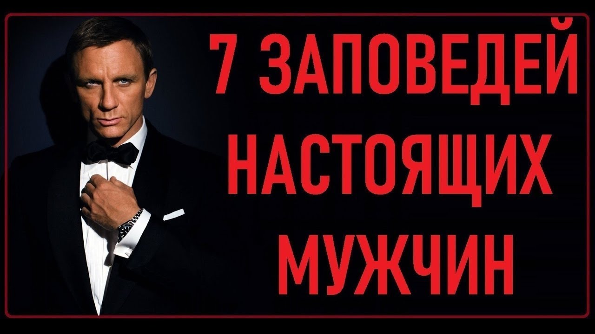

Mauris vitae nisl nec metus placerat perdiet est. Phasellus dapibus semper urna. Pellentesque ornare, orci in consectetuer hendrerit, volutpat.
Pellenteque ornare

Советы для мужчин. Как сохранить красоту и густоту волос в ... Вредные советы для мужчин. Уважаемые мужчины, вас еще не пилит жена? Тогда, мы идем к вам. Прежде всего, никогда не снимайте носки, приходя с работы. Даже, если на улице +30 или отопление жарит ...
Советы по уходу за собой для мужчин Советы для мужчин. ... Перед тем как начать пользоваться фильтром для воды, налей туда… водки! Она отлично подготовит фильтр к применению.
Советы для мужчин ~ Психология отношений Домашние тренировки для мужчин помогут привести себя в форму или даже добавить парочку килограмм мышечной массы. Лучшие упражнения и программа тренировок.
Советы психологов для мужчин и женщин Зачем нужна зарядка для мужчин по утрам: её польза, эффективность, комплекс разминочных упражнений по утрам, правила выполнения мужской зарядки (физнагрузка).
Потенция: советы врачей и урологов для мужчин для ... Советы для мужчин: Как пережить ПМС?? 26 апреля '10 10:40 Комментариев: 0. О негативных сторонах этого состояния даже рассказывать не нужно, практически каждая женщина испытывает это если не на ...
Советы для мужчин, как избавиться от перхоти | Clear Полезные советы для мужчин по стилю: стань круче Джеймс Бонда. Стилисты дают ТОП-20 советов мужчинам, которые не считают, что они должны быть лишь «могучие, вонючие и волосатые»:
Советы уролога для мужчин, как сохранить потенцию Привет! Мне 16 лет. Я встретил девушку, она мне очень нравится и вроде все хорошо складывается, но!... она моя первая девушка вообще - у меня никогда небыло...